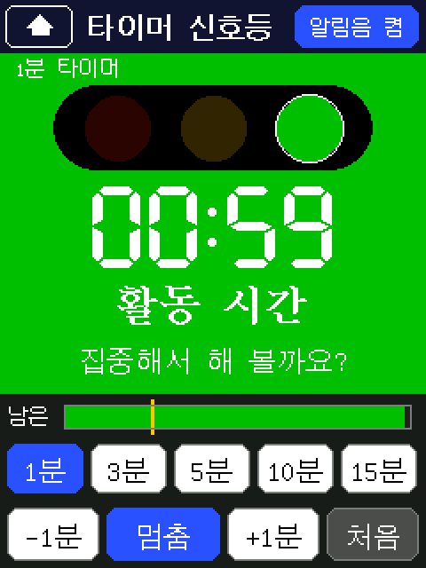
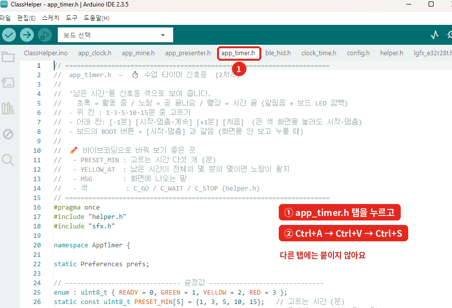
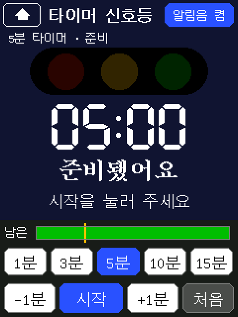

바이브코딩으로 만드는 교탁 도우미
2차시 / 전체 3차시
남은 시간을 보여 주는 타이머 신호등
입력 → 판단 → 표시, 피지컬 컴퓨팅의 뼈대
2남은 시간을 보여 주는 타이머 신호등
이번 차시 흐름 · 50분
00~05분지난 시간 확인과 오늘의 목표
05~12분보드 시계와 앱 규칙
12~30분① 기본 신호등 만들기
30~40분② 시간 고르기 · ③ 알림 더하기
40~46분우리 반 활동에 맞추기
46~50분정리
시간은 안내일 뿐입니다. 업로드에서 막히는 분이 많으면 실습 시간을 늘립니다.
2남은 시간을 보여 주는 타이머 신호등
오늘 만들 것



화면 전체가 신호등 색으로 바뀝니다. 모둠 활동·시험 시간에 교실 뒤에서도 잘 보입니다.
2남은 시간을 보여 주는 타이머 신호등
입력에서 표시까지
2남은 시간을 보여 주는 타이머 신호등
알아 둘 것
delay()는 쓰지 않습니다
1초씩 멈춰서 기다리면 그동안 터치가 먹지 않습니다.
그래서 millis() — 켜진 뒤 흐른 시간 — 을 보며 판단합니다.
2남은 시간을 보여 주는 타이머 신호등
앱 규칙 — 네 칸 채우기
2남은 시간을 보여 주는 타이머 신호등
새 앱을 만드는 순서
1
새 대화제미나이에서 새 대화2
프롬프트워크벤치 2차시 ①을 붙여 넣고3
두 파일 이어 붙이기그 아래에 helper.h와 빈 app_timer.h — 한 번에 보내기4
덮어쓰기받은 코드를 app_timer.h 탭에Ctrl+A → Ctrl+V → Ctrl+S
조수석은 워크벤치에서 붙일 순서를 읽어 주고, 운전석은 붙여 넣습니다.
2남은 시간을 보여 주는 타이머 신호등
탭에 통째로 덮어쓰기
app_timer.h 탭을 누르고, 전체 선택 후 붙여넣기. 다른 탭은 건드리지 않습니다.
아두이노 IDE — app_timer.h

2남은 시간을 보여 주는 타이머 신호등
직접 18분
① 기본 신호등
첫 화면의 회색 칸이 초록으로 켜지면 성공. 9분쯤 자리를 바꿉니다.
오류가 나면 맨 위 세 줄을 복사해 AI에게 보여 줍니다.
2남은 시간을 보여 주는 타이머 신호등
같은 대화에 이어서 말하기
1
② 시간 고르기1·3·5·10·15분 버튼 + [-1분] [+1분]2
③ 알림노랑이 될 때 짧게, 끝나면 알림음 + LED 깜빡3
또 업로드바꾼 파일 전체를 다시 덮어쓰기대화를 새로 열면 AI가 앞에서 만든 것을 모릅니다. 같은 대화에서 이어 갑니다. ②가 끝나면 자리를 바꿉니다.
2남은 시간을 보여 주는 타이머 신호등
알림이 수업을 방해하지 않게
- 끝날 때 한 번만 울린다
- [알림음 켬/끔] 버튼 — 시험 시간엔 끔
- 빨강은 깜빡이되 0.5초마다 천천히
- 보드 BOOT 버튼으로도 시작·멈춤
이 보드의 LED는 켜기·끄기만 됩니다. 0~255 중 25보다 큰 값이면 켜집니다.
2남은 시간을 보여 주는 타이머 신호등
우리 반 활동에 맞추기

시간이 지나도 빨간 화면에 몇 초 넘었는지 보여 줍니다. 모둠 발표 시간 지키기에 좋습니다.
2남은 시간을 보여 주는 타이머 신호등
우리 반에 맞추기
- 시간 버튼을 우리 반 활동에 맞게 — "2·4·7분으로 바꿔 줘"
- 노랑 시점을 "1분 남았을 때"로
- 문구를 우리 반 말투로 — "정리 시작!"
- 큰 색 화면을 눌러도 시작·멈춤 — 손이 바쁠 때
2남은 시간을 보여 주는 타이머 신호등
다음 시간
보드가 PPT를 넘긴다
보드가 노트북의 블루투스 키보드가 됩니다.
수업에 쓰는 PPT 파일을 두 분 모두 하나씩 가져오세요.